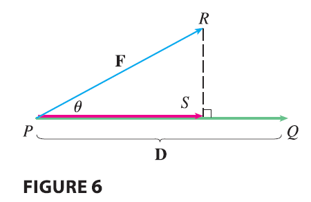
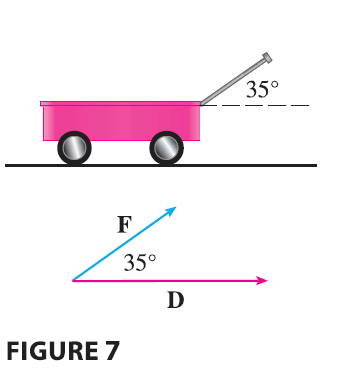

One use of projections occurs in physics in calculating work. We know that the work done by a constant force \(F\) in moving an object through a distance \(d\) as \(W = Fd\), but this applies only when the force is directed along the line of motion of the object. Suppose, however, that the constant force is a vector \(\mathbf{F} = \vec{PR}\) pointing in some other direction, as in Figure 6. If the force moves the object from \(P\) to \(Q\), then the displacement vector is \(\mathbf{D} = \vec{PQ}\). The work done by this force is defined to be the product of the component of the force along D and the distance moved: \[ W = (|\mathbf{F}|\cos\theta)|\mathbf{D}| \] But then, from Theorem 3, we have \[ W = |\mathbf{F}||\mathbf{D}|\cos\theta = \mathbf{F} \cdot \mathbf{D} \tag{12} \] Thus the work done by a constant force F is the dot product \(\mathbf{F} \cdot \mathbf{D}\), where D is the displacement vector.
EXAMPLE 7 A wagon is pulled a distance of 100 m along a horizontal path by a constant force of 70 N. The handle of the wagon is held at an angle of \(35^\circ\) above the horizontal. Find the work done by the force.
